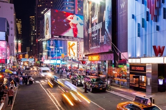

Saneliswa Majwede

WHICH CITY?
New York
Find New York to be full of opportunities and a great place to persue your dreams. The city is filled with energy. There is no other city on this planet with great energy that would compete with New York. Another thing I love about the city is the incredible diversity. You'll see all sorts of people from all over the world.
Foreign Language
FRENCH
French is spoken all over the world, french is incredibly rich in culture. It will allow me to travel anywhere in the world and it's the language of love. To finally understand french humor.
| English phrase: | French phrase: |
|---|---|
| Perfect | Parfaite |
| I love it here | plais beaucoup incredible |
| Thank you | Merci |
| Hello, Good morning | Bonjour |
| Mrs/ Mr | Madam/Monsieur |
HISTORIC PLACES IN CAPE TOWN
City Hall
- Contains a french styled architechure feature.
- Cape Town city hall is one of the oldest and most central public spaces.
- Held a memorial for Mandela in 2018.
Castle of Goodhope
- Was declared a national monument.
- The building housed everything from a church , bakery and living quarters, to various workshops, shops and prison cells, amoung other facilities.
- Yellow paint was originally chosen for the walls because it reduced the effects of the not african sun.
Distric Six Museum
- Well situated at the edge of the area nominated as a national heritage site.
- This is an exepional museum small in size,inspiring and educational.
- Distric Six Museum provides context as well as rotating exhibits on the residents who died there.